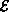
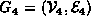
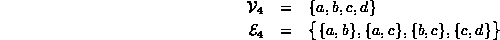
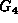
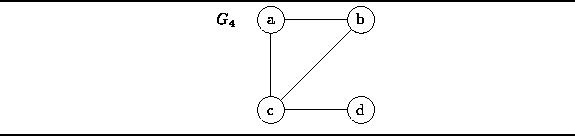
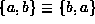
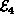

Data Structures and Algorithms
with Object-Oriented Design Patterns in Java
Data Structures and Algorithms
with Object-Oriented Design Patterns in JavaAn undirected graph is a graph in which the nodes are connected by undirected arcs . An undirected arc is an edge that has no arrow. Both ends of an undirected arc are equivalent--there is no head or tail. Therefore, we represent an edge in an undirected graph as a set rather than an ordered pair:
Definition (Undirected Graph) An undirected graph is an ordered pairwith the following properties:
- The first component,
, is a finite, non-empty set. The elements of
- The second component, , is a finite set of sets. Each element of is a set that is comprised of exactly two (distinct) vertices. The elements of are called the edges of G.
For example, consider the undirected graph  comprised of four vertices and four edges:

The graph  can be represented
graphically as shown in Figure  .
The vertices are represented by appropriately labeled circles,
and the edges are represented by lines
that connect associated vertices.
.
The vertices are represented by appropriately labeled circles,
and the edges are represented by lines
that connect associated vertices.

Figure: An undirected graph.
Notice that because an edge in an undirected graph is a set,
,
and since  is also a set,
it cannot contain more than one instance of a given edge.
Another consequence of Definition is that there cannot be an
edge from a node to itself in an undirected graph
because an edge is a set of size two
and a set cannot contain duplicates.
 Copyright © 1998 by Bruno R. Preiss, P.Eng. All rights reserved.
Copyright © 1998 by Bruno R. Preiss, P.Eng. All rights reserved.